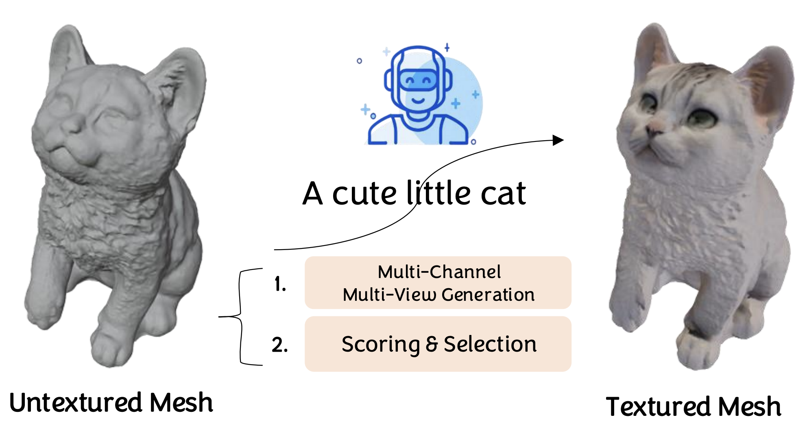
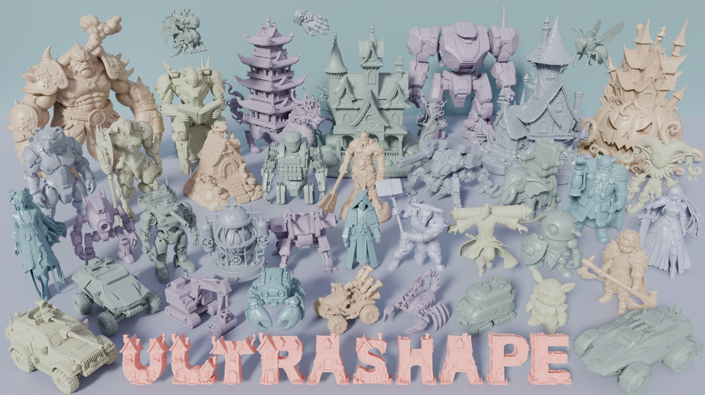
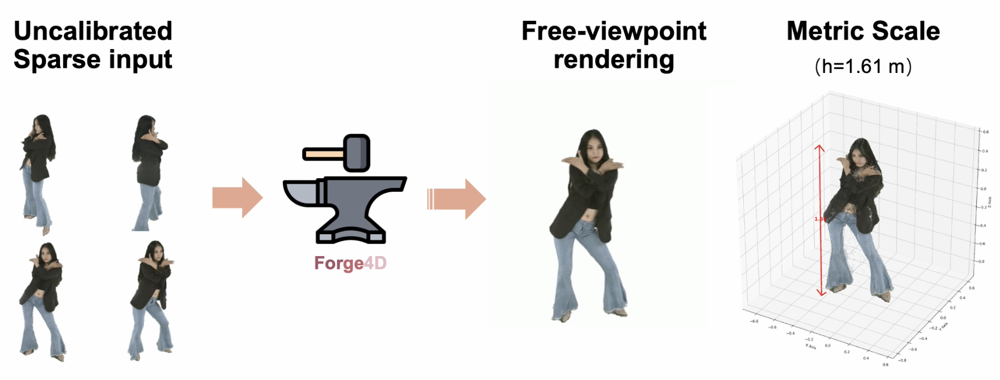
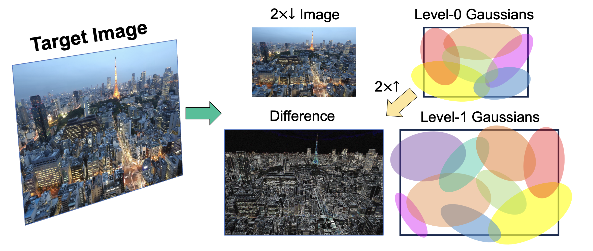
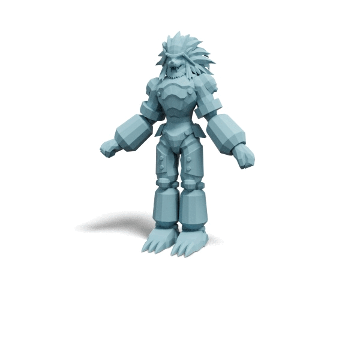
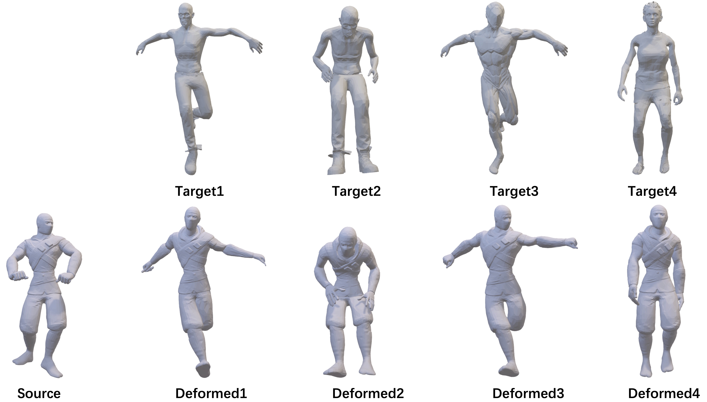
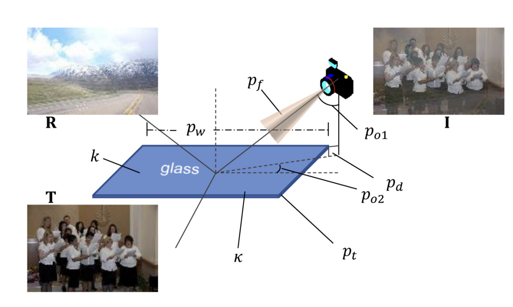
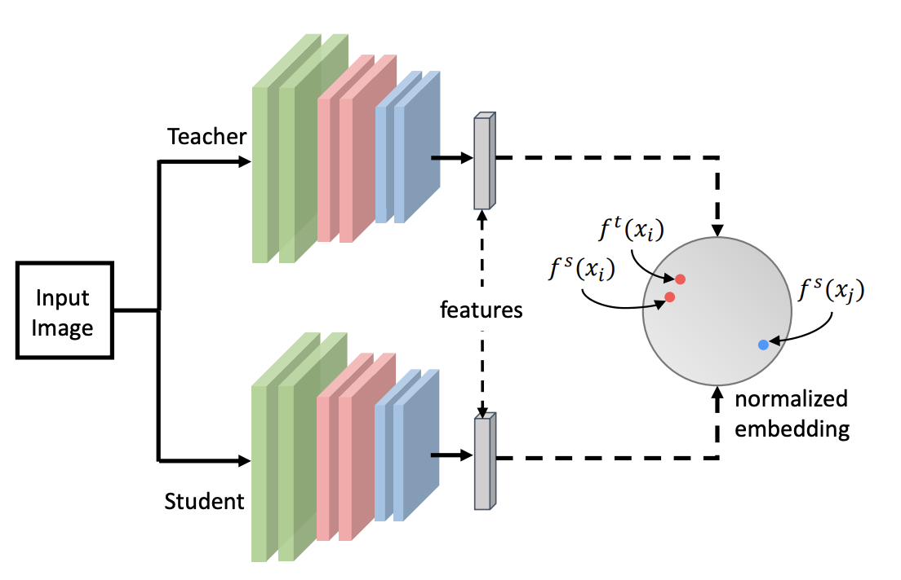

I received my Ph.D. from the National University of Singapore School of Computing in 2025, advised by Prof. Gim Hee Lee. Before that I received my B.E. from Wuhan University and my M.Eng. from Nanyang Technological University (GPA 5.0/5.0), where I was advised by Prof. Xudong Jiang and Dr. Zheng Qian.
My research centers on Computer Vision and Generative Models — including 3D Generation / Reconstruction / Animation (Mesh, 3DGS, Rigging & Skinning), Multimodal Video Generation (AR & Diffusion), and Unified Understanding–Generation Models. I'm currently an AI Engineer on Foundation AI at Roblox, and previously interned at Hedra Labs, Tencent Games, and ByteDance AI Lab.
I'm always open to research collaborations and discussions — feel free to reach out by email.

MuMA'">
UltraShape 1.0'">
Forge4D'">
LIG'">
Auto-Connect'">
WS-3DPT'">
Reflection Removal'">
Feature Distillation'">